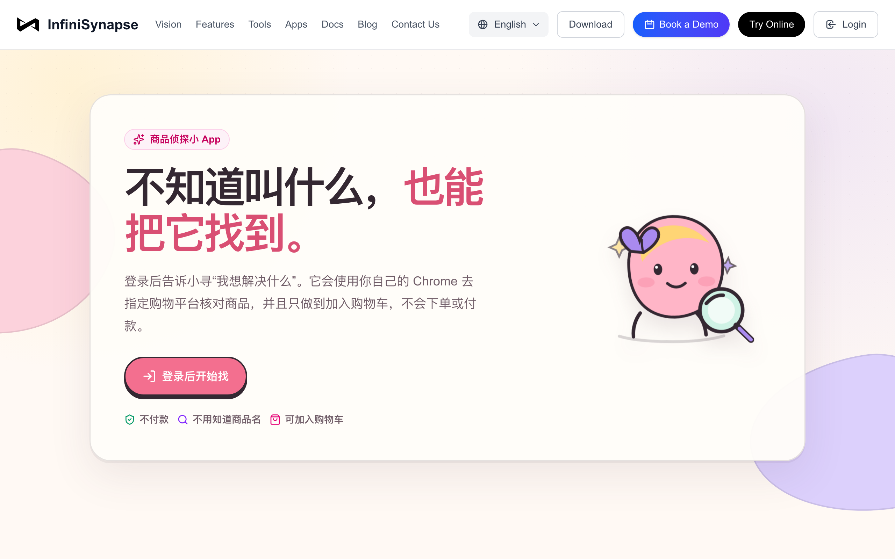
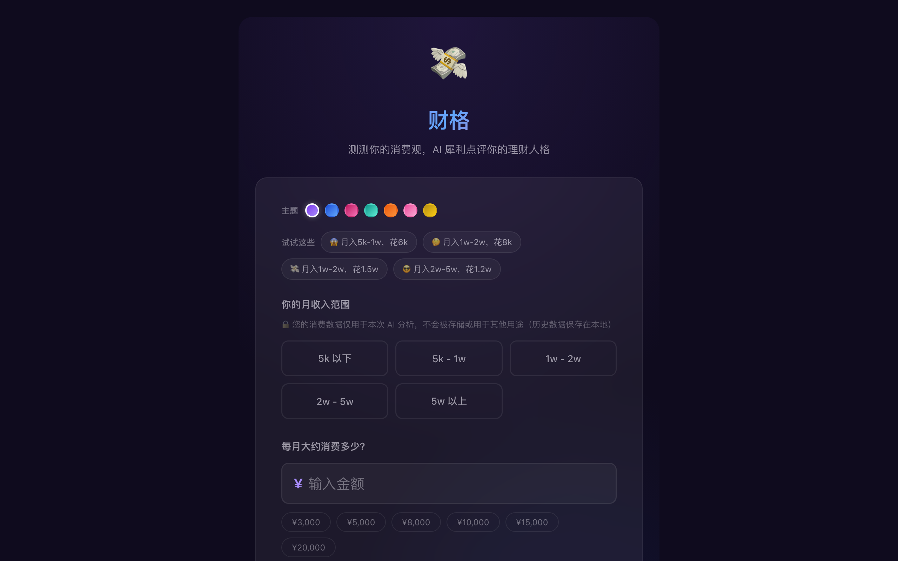
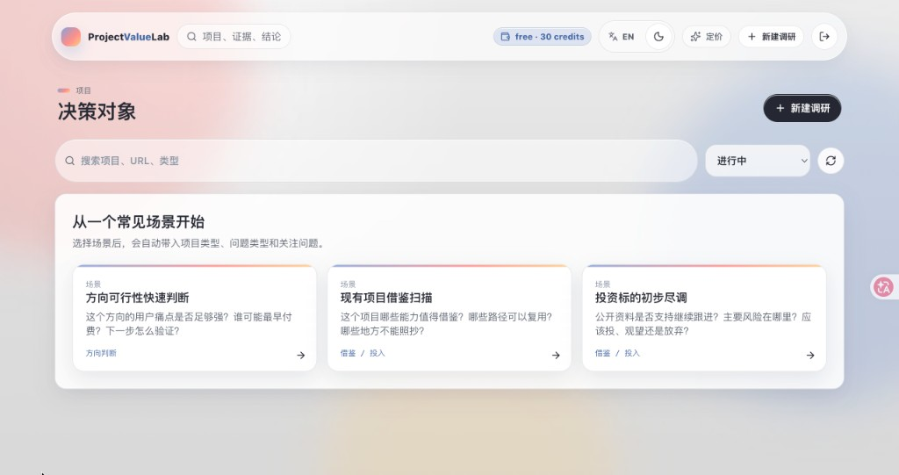

Submissions
部分已上线作品一览
以下为部分公开展示的代表作 · 均已部署上线
01
消费决策 · 电商搜索
帮我找到那个东西
不知道商品名，也能按用途描述找到合适商品，并完成加购决策。
已上线

02
个人理财 · 性格测评
财格
AI 结合消费数据，输出可读、可分享的理财性格报告。
已上线

03
项目评估 · 决策支持
ProjectValueLab
项目价值调研工具——围绕证据、评分、风险与建议输出结构化分析。
已上线
